Inside Island Jiu-Jitsu · Arlington / Smokey Point
REAL TRAINING.
REAL MOMENTS.
See the instruction, people, and team experiences behind Island Jiu-Jitsu Washington. You can train for fitness, confidence, community, or competition.
Explore the photo collections below.
In the Gym
Coaching, partner practice, and the people who make the academy a community.

Together on the academy mats.
Select photo to enlarge →
A ground-position demonstration.
Select photo to enlarge →
Smiles at the academy.
Select photo to enlarge →
Young students and adults together.
Select photo to enlarge →
Watching a standing demonstration.
Select photo to enlarge →
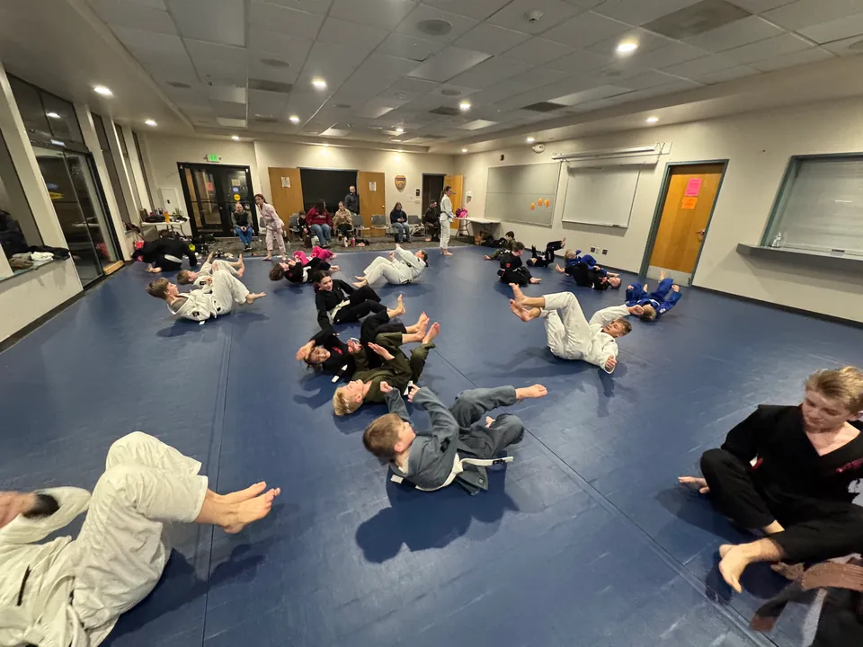
Movement practice across the mats.
Select photo to enlarge →
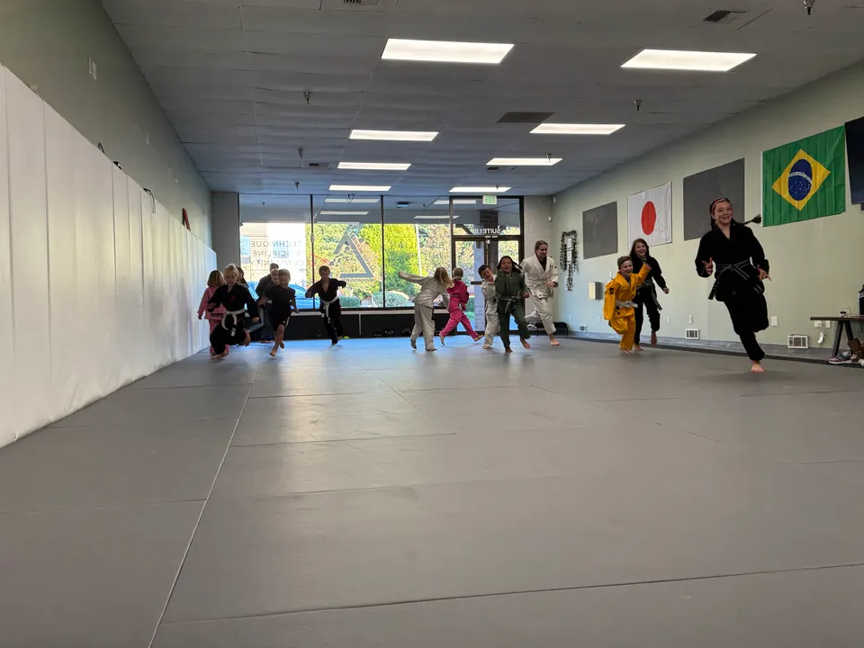
Moving together across the mats.
Select photo to enlarge →
Working through a ground position.
Select photo to enlarge →
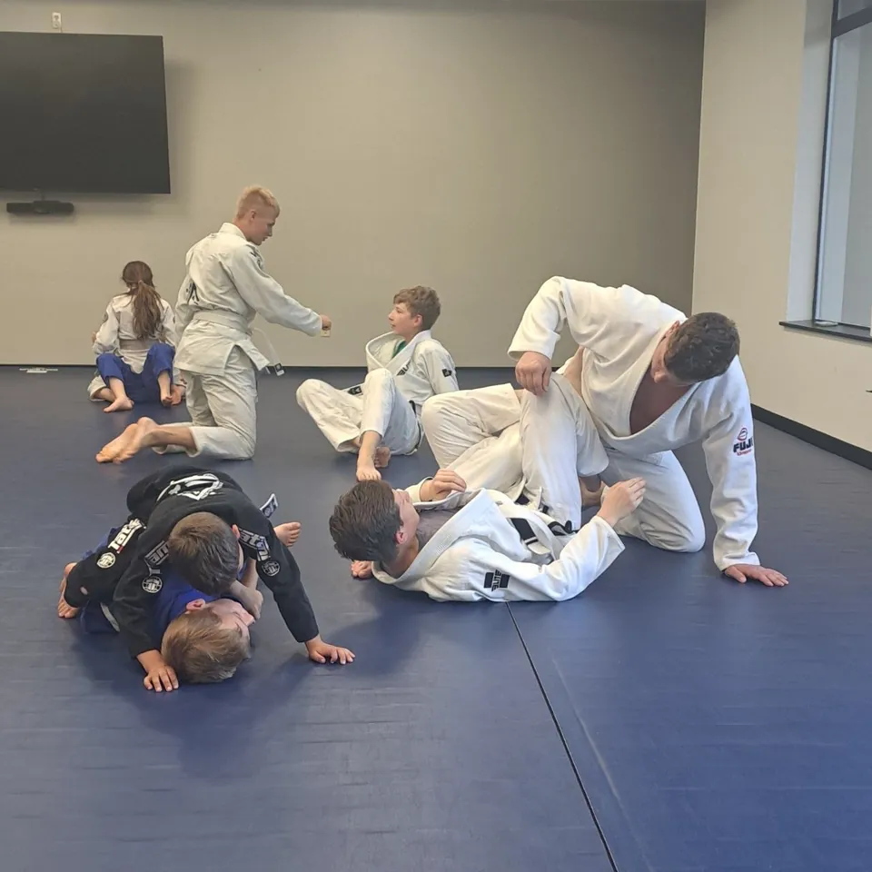
Partner practice on the academy mats.
Select photo to enlarge →
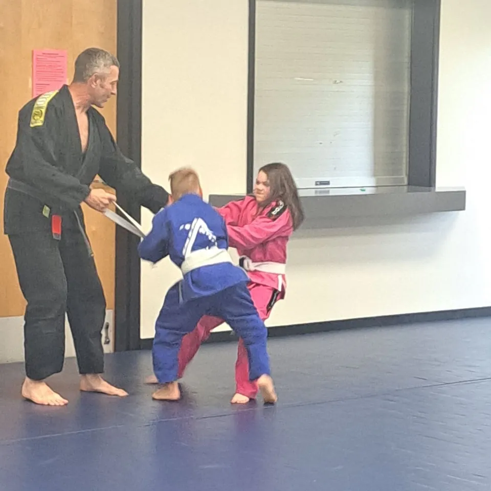
Hands-on guidance during standing practice.
Select photo to enlarge →
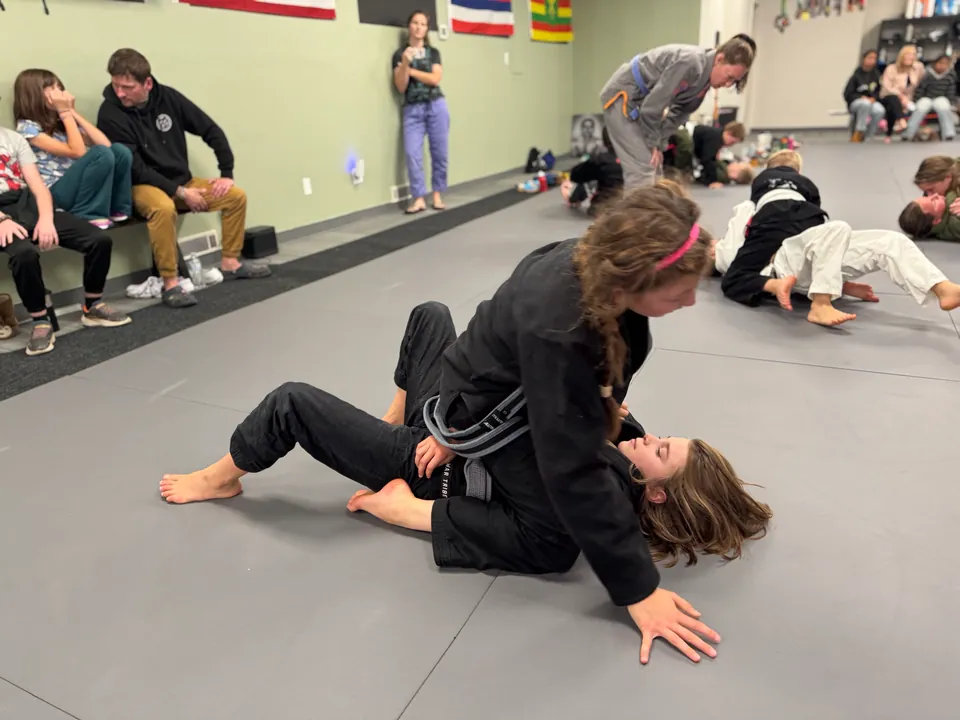
A shared moment during partner practice.
Select photo to enlarge →
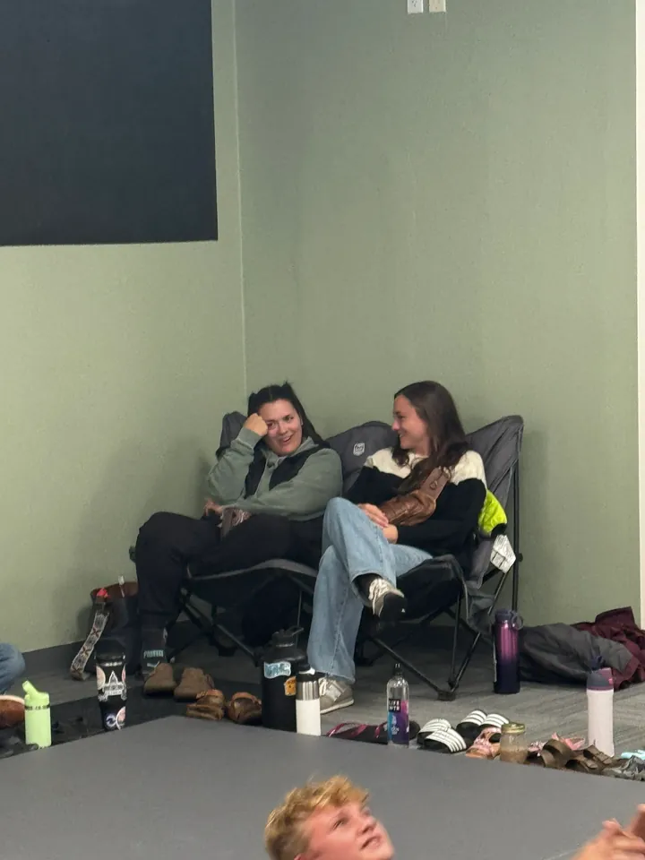
A conversation beside the mats.
Select photo to enlarge →Competition & Medals
Team outings, competition rounds, and moments worth celebrating. Competing is a choice, not a requirement to train.

Team together on competition day
Select photo to enlarge →
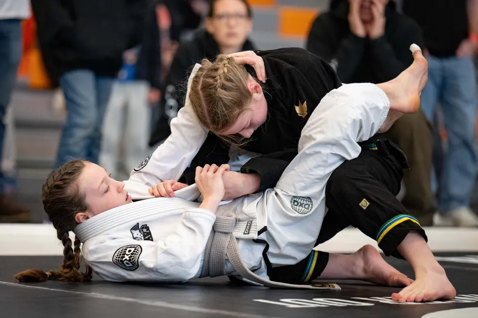
Working for position on the mat
Select photo to enlarge →
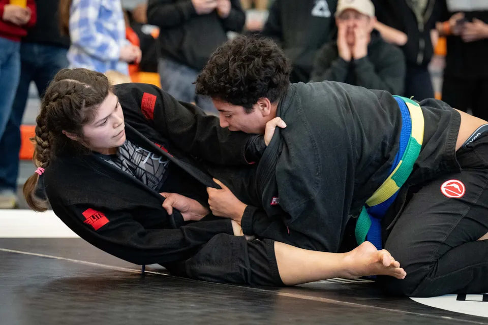
A focused exchange
Select photo to enlarge →
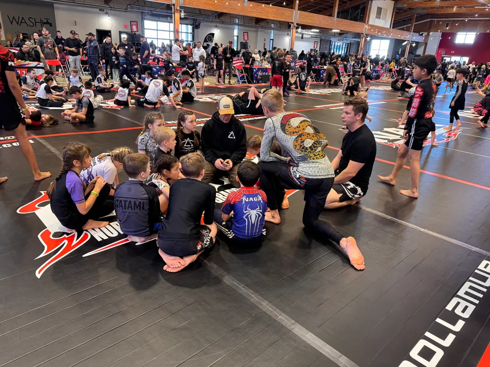
Gathering beside the competition mats
Select photo to enlarge →
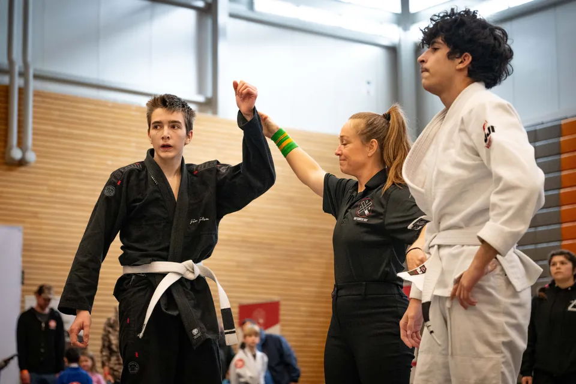
A raised-hand moment after the match
Select photo to enlarge →
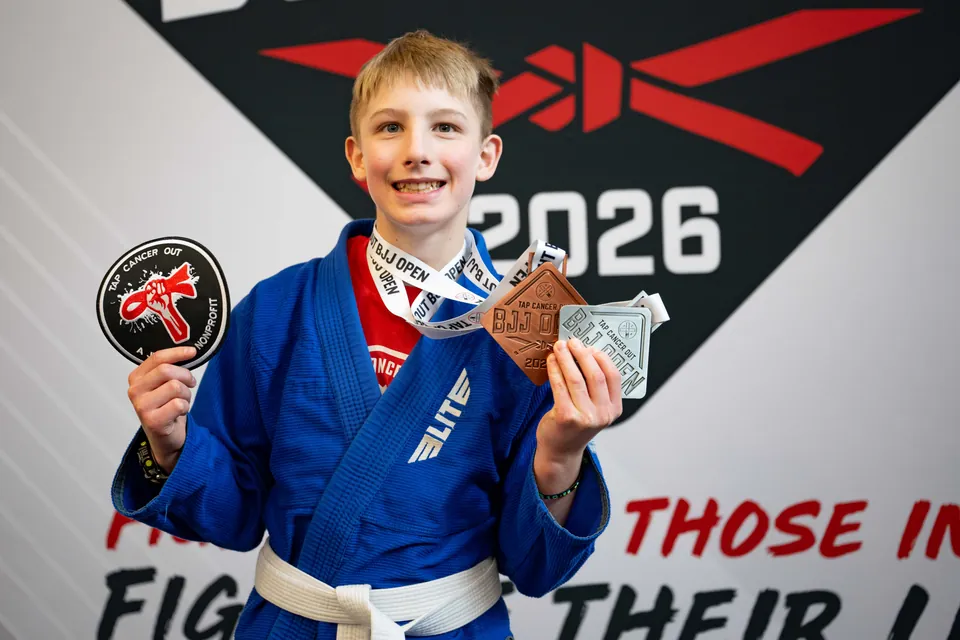
A smile with medals
Select photo to enlarge →
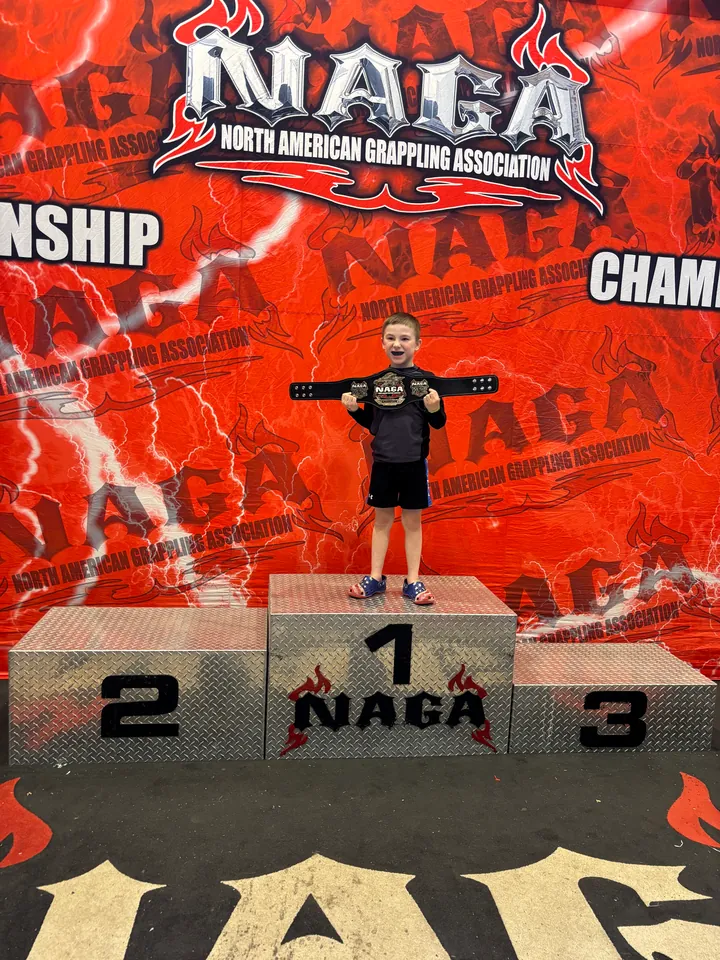
A moment on the podium
Select photo to enlarge →
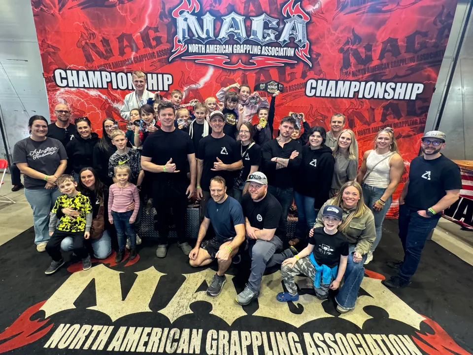